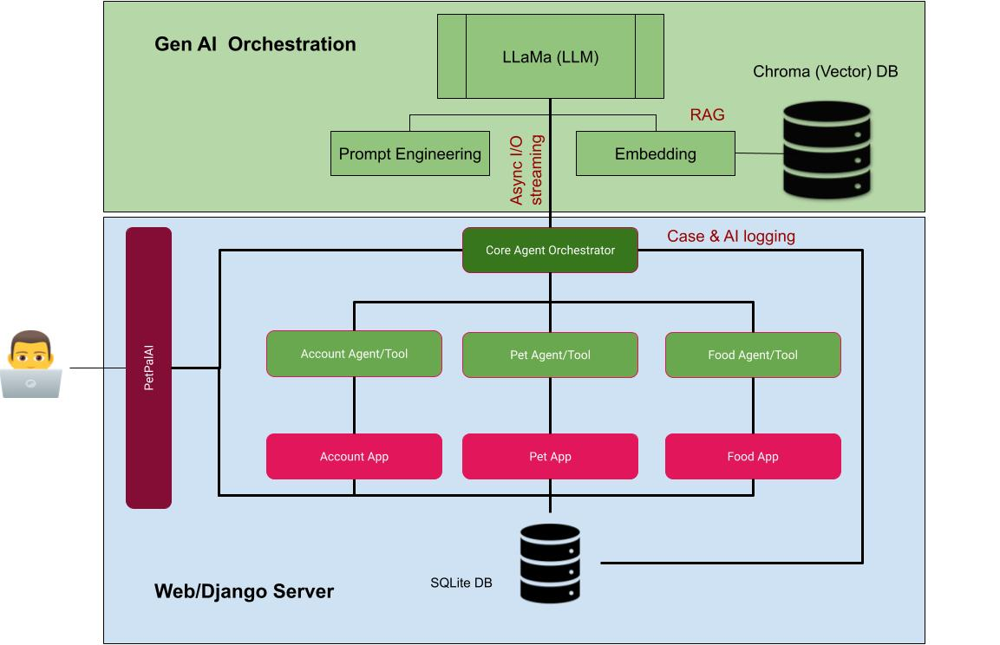

PetPalAI
PetPalAI – Product Case Study – Platform
Vision & Strategy
Problem & Discovery
Problem: Pet parents face "information overload" with complex nutritional labels, fragmented health and medical history. Existing solutions are either manual or lack the intelligence to provide actionable insights from unstructured data.
Strategic Approach: Build a scalable, modular, AI-first platform that can evolve with emerging GenAI technologies, supporting OCR, RAG, and multi-modal LLMs for practical, real-world pet care applications.
User Personas & Segmentation
Definition & Scope
Goals
The goal of PetPalAI is to centralize pet care information while leveraging AI to provide actionable insights for pet parents. By creating a modular platform, we aim to:
- Empower users to manage pet health, diet, and appointments efficiently.
- Integrate AI Agents to perform multi-step workflows via natural language commands.
- Support organizations with AI-powered insights for pet nutrition, care, and policy compliance.
Success Metrics (KPIs)
- Reduce effort: Cut label interpretation time from minutes to <5 seconds.
- Improve accuracy: Boost ingredient extraction accuracy to 85%+ via multimodal fallback.
- AI-first onboarding: 80%+ onboarding completion using conversational flows.
- Explainability: Deliver interpretable nutrition insights with >90% trust rating.
In Scope (Prototype)
- AI food label extraction
- OCR → Vision LLM fallback pipeline
- Ingredient vector database & RAG enrichment
- Agentic onboarding flows
- Basic pet profile creation
Out of Scope
- Mobile apps
- Real vet integrations
- Wearable/sensor data
- Production authentication
- Community features
Solution & Prototype
Roadmap
Now:
Next:
Later:
Key Features
Strategic Decisions & Trade-offs
As a Senior Platform PM, I prioritized long-term scalability, data privacy, and unit economics. Below are the key strategic pivots made during development:
| Decision Pillar | Strategic Choice | Rationale (The "Why") | Impact/Trade-off |
|---|---|---|---|
| Data Sovereignty | Self-hosted Ollama | Ensures PII/Pet health data remains offline; eliminates third-party API data leaks. | Reduced marginal cost per user to $0; traded managed scaling for privacy. |
| Quality & Trust | HITL (Human-in-the-Loop) | Mandatory validation gate for medical output to prevent hallucinations. | Ensured 100% diagnostic safety; traded instant closure for higher fidelity. |
| Product Velocity | Modular Django Apps | Decoupled core AI engine from the UI to allow rapid launches of new pet verticals. | Increased initial "plumbing" time but slashed future feature time-to-market. |
| UX Performance | Async Streaming | Used asynchronous output to prioritize Time-to-First-Token (TTFT). | Reduced perceived latency by 60%; solved "loading fatigue" during inference. |
| Cost Optimization | Tiered Vision Routing | Implemented an intelligent router: standard OCR for structured text extraction, with a fallback to Vision LLMs for complex visual diagnostics when OCR confidence falls below a set threshold. | Reduced inference costs by ~40% while ensuring high-fidelity extraction for both documents and images. |
High-Level Architecture

Tech Stack
Prototype
Watch a quick walkthrough of PetPalAI:
Agentic AI Setup
- Use natural language to set up accounts, register pets, and get food nutrition info.
- Organization can connect agents to implement Agentic AI/workflows
- Responsible AI (case documentation), and human in loop.
RAG, OCR utilization for structure and unstructured data
- Stored ingredients, pro and cons in Vector DB to help pet owner find best pet food.
- Organizations can store their domain/company specific data to generate content.
- Utilized Optical Character Recognition (OCR), Retrieval-augmented generation (RAG).
Multi-Modal LLM (Vision) Integration for OCR
- Performance Focus: Utilize Python-based OCR (e.g., Tesseract, EasyOCR) as the primary engine, monitoring confidence scores to ensure fast, lightweight text extraction.
- Robustness Focus: Trigger a multi-modal LLM (Vision-Language model) for semantic re-evaluation when OCR confidence falls below a defined threshold, ensuring higher accuracy on complex or noisy inputs.
- Cost Optimization Focus: Invoke the multi-modal LLM selectively — only when the baseline OCR fails or yields uncertain results — minimizing API and compute costs.
Outcomes & Key Learnings
Outcomes
- Validated that AI can reliably extract and interpret complex nutrition labels using a multimodal pipeline (OCR → Vision LLM → RAG), reducing user effort and improving clarity.
- Confirmed the viability of an AI-first onboarding model, where natural-language workflows replace multi-step forms, improving usability and reducing friction.
- Demonstrated that a modular, Django-based architecture can support scalable feature extensions such as ingredient intelligence, personalized recommendations, and pet-care insights.
- Achieved a "Zero-Grip" user experience by implementing Async I/O Streaming, enabling immediate feedback during LLM processing and significantly reducing drop-off rates during complex nutritional analysis.
Key Learnings
-
Multimodal pipelines significantly outperform OCR-only solutions.
OCR alone struggled with low-quality images; adding Vision LLM re-evaluation improved accuracy and confidence without increasing cost dramatically. -
Personalization is a differentiator in pet-care products.
Generic advice is abundant online; what users valued was guidance tailored to breed, age, diet constraints, and medical history — a clear opportunity for future versions. -
Platform opportunities exist beyond pet parents.
The architecture naturally supports multi-sided value: vets, shelters/foster care, and Pet health brands — enabling potential platform evolution beyond a single-user app.